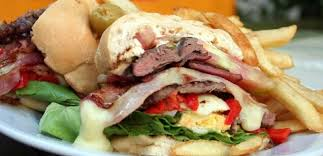

Platillos Uruguayos
Asado
Cualquiera que ame la carne tanto como los uruguayos considerará el asado como el producto estrella de esta lista. La tradición consiste en una barbacoa que incluye todo tipo de carne imaginable (ternera, pollo y cerdo) y una gran variedad de salchichas y achuras (en referencia a los despojos). El asado no sólo es tradicional por la comida, sino también por los rituales que lo rodean. Por ejemplo, el asado suele comerse en grandes grupos, parte de la mayoría de las ocasiones especiales, y dura varias horas mientras se prepara la comida. También, la persona encargada de asar la carne es conocida como el asador.
Arroz con leche
Sí, el arroz es el ingrediente principal de esta irresistible receta. De hecho, arroz y leche, además de huevos y azúcar son todo lo que se necesita para hacer este tradicional postre uruguayo. Por lo general se sirve con una pizca de canela encima o dulce de leche, porque, por supuesto, el dulce de leche puede acompañar a casi todos los platos dulces uruguayos.
>

Chivito
Todo el mundo debería probar un chivito mientras esté en Uruguay. Aunque su nombre significa «cabra pequeña», en realidad no está hecha de carne de cabra. Consiste en un sándwich de carne de res con muchos ingredientes, usualmente incluyendo un huevo frito, lechuga, tomate, jamón, mozzarella, tocino, aceitunas, pimiento morrón y mayonesa. Y ningún chivito está completo sin una gran porción de papas fritas.